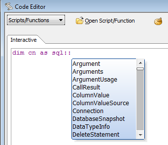
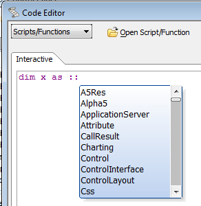
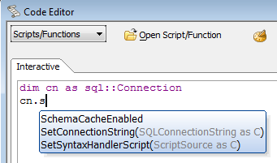
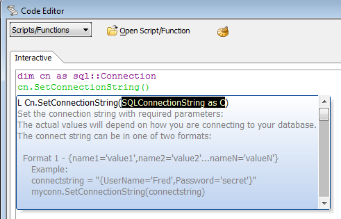

Xbasic with Classes
While Xbasic has had classes for several versions, in Version 11 we are giving classes new and valuable capabilities. You should find the new Xbasic classes to have most of the capabilities of classes in C#, Java, and Visual Basic .NET without being too complex to understand.In general, object-oriented programming and classes attempt to make software more robust and reusable. They do this in a number of ways.
From a class user's point of view, a well-designed class with its own methods and properties is easier to understand and invoke than a bunch of global functions. Classes are easier to reuse than functions, and have less repeated code, thanks to the ability for one class to inherit from another class.
Using classes also helps to avoid naming collisions and can allow method names to be simple. For example the Table.Open method and the File.Open method have the same method name, but neither programmers nor the system confuses them.
To further avoid naming collisions, you can use a namespace as a prefix to the class name, such as MyNamespace::MyClass; this can be extended with a company or domain prefix for additional differentiation. For example, the Alphasoftware.Demo::DemoClass class would be distinct from the yourcompanyname.Demo::DemoClass class.
Object-oriented programming supports inheritance, also called specialization or data abstraction, and data hiding, also called encapsulation. Xbasic classes already had some of these capabilities.
We are improving Xbasic classes by giving them data hiding capabilities (private and protected members), adding class constructors and destructors, adding the new keyword for invoking specific constructors, and making it easy to create Class definition files that can optionally include namespaces for the class.
Data hiding is extremely valuable as it makes code much more robust. If an Xbasic class has an internal value, it can make that field private to completely hide it from the "outside world." If it wants to allow code outside the class to see but not change the value of the field, it can make the field public read private write. If it wants to extend write capabilities to its sub-classes, it can make the field public read protected write. Compare that with a simple variable that can only have more or less scope of visibility, with no fine-grained control over what code can or can not change the value of the variable.
Constructors allow a class to perform some actions every time a new instance of the class is created, such as initializing internal variables (fields). Many Xbasic classes can get by without explicit constructor methods, but they are often useful.
Destructors allow a class to perform some actions, often clean-up, every time an instance of the class is destroyed, whether the instance is explicitly deleted or just goes out of scope. In Xbasic, destructors are rarely needed, since the Xbasic run-time aggressively releases memory, file handles, database connections, and most other resources held by a class whenever a class goes out of scope or is deleted.
We support constructor overloads, and users of a class can invoke specific constructors using the new keyword, for example
dim sp as StoredProc = new StoredProc("::name::NorthwindSS")
In addition to beefing up the class syntax proper, we have improved the support available to programmers who are writing code using classes. You now get pop-up auto-completion for namespace members when you type the '::' delimiter after a namespace name:

This also works for the top-level namespace, '::':

You get pop-up autocompletion for class members once a class has been DIMmed:

And, you get pop-up help for member function parameters once you have written the function name:

- Xbasic Class Syntax V11
- Designing an Xbasic Class V11
- Implementing an Xbasic Class V11
- Testing and Using an Xbasic Class V11
- Subclasses and Inheritance V11
- Classes in Namespaces V11